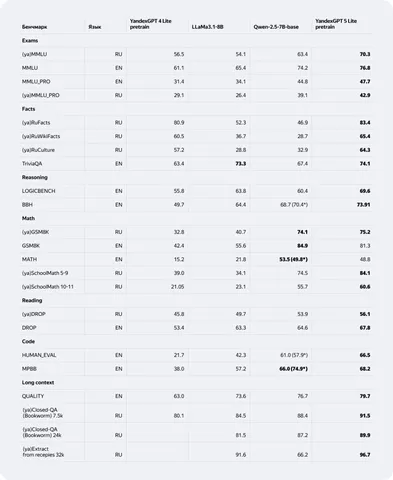

Сегодня Яндекс показал миру новое поколение больших языковых моделей — YandexGPT 5. Старшая модель YandexGPT 5 Pro доступна в чате с Алисой и Yandex Cloud через API. Ну а претрейн-версия младшей модели YandexGPT 5 Lite Pretrain — уже лежит на Hugging Face.
Все подробности о процессе обучения можно прочитать в статье на Хабре. А в этом посте — главные факты о свежей опенсорсной модели Яндекса.
YandexGPT 5 Lite Pretrain — модель на 8 миллиардов параметров с длиной контекста 32 тысячи токенов. Претрейн проходил в два этапа: сначала модель обучили на 15 триллионах токенов текста на русском и английском языках, а потом использовали 320 миллиардов токенов высококачественных данных, включая образовательный контент.
На первом этапе датасет больше чем на половину состоял из веб-документов, остальное — код, математика и специфичные данные. Под последними подразумеваются синтетика (сгенерированные YandexGPT 4 вопросы на основе проверенных источников) и внутренние наработки компании (например, внутренняя база Яндекса Fact Snippet и новый корпус данных Переводчика).
На втором этапе датасет на четверть состоял из веб-страниц и почти в равных пропорциях содержал математику, код и образовательные данные. Также была небольшая часть аугментаций фактовых документов, другой синтетики и датасетов сервисов.
По сравнению с моделью предыдущего поколения, YandexGPT 4 Lite Pretrain, новая модель показывает ощутимый рост качества в решении математических задач и написании кода. А в сравнении с зарубежными аналогами, такими как LLaMa3.1-8B и Qwen-2.5-7B-base, она лидирует почти во всех типах задач.
Ещё раз приглашаем пощупать модель, почитать статью на Хабре с деталями обучения и не забыть поделиться впечатлениями в комментариях!
ML Underhood
